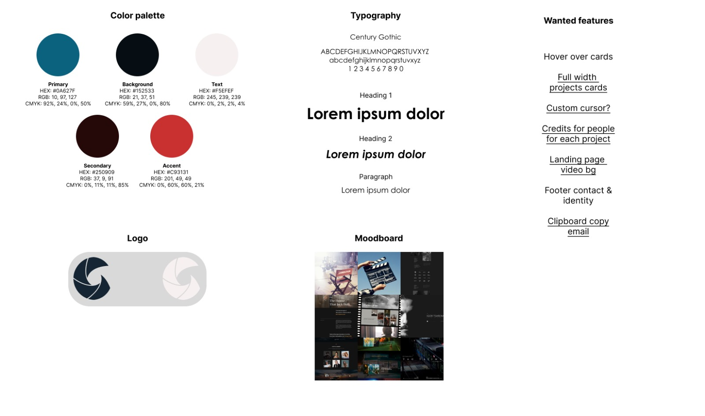
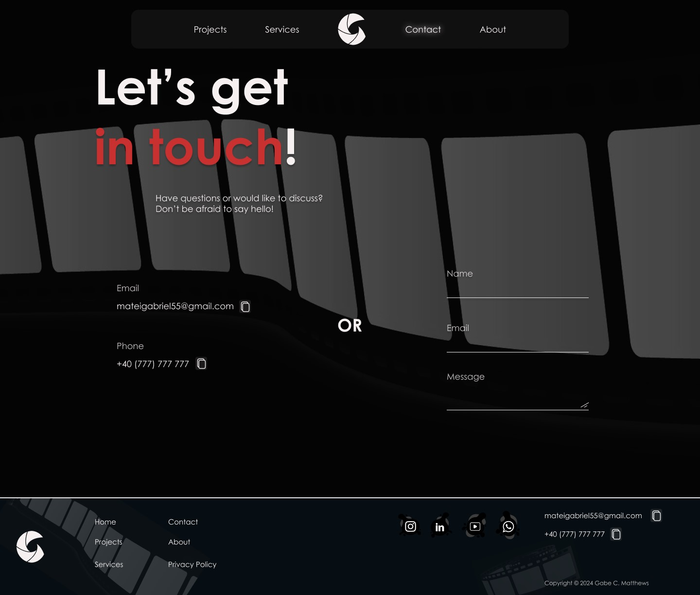
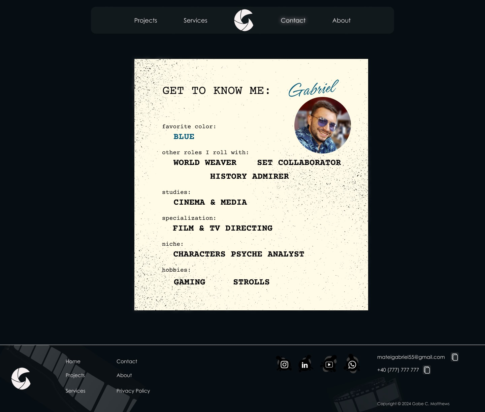

Film Director Website Design
Challange
The challenge was to design a website that presents the director's portfolio while keeping visitors engaged. The website needed to strike a balance between aesthetics and functionality, prioritizing clear information structure and seamless navigation.
Solution
The solution concept centered around a clean and minimalist design aesthetic, with a focus on clear information hierarchy and compelling copywriting tactics. Each webpage was crafted to prioritize content structure.
Tools and Resources
- Figma
- Adobe Illustrator
- Stock visuals (Icons, Graphics)
- Copywriting tactics for compelling content
The Outcome
The outcome of the project was a visually and functionally robust website that effectively showcases the director's portfolio of films. The website received positive feedback from the director and visitors alike, with its intuitive design and engaging storytelling contributing to an immersive user experience.
Collaboration
Throughout the project, collaboration with the film director friend played a crucial role in shaping the website's design direction. Feedback sessions and discussions helped refine the visual aesthetic, content strategy, and overall user experience to align with the director's vision.
The Process
The design process for the filmmaker website embraced a participatory design approach, emphasizing a deep understanding of the director's field. This involved two main meetings with the film director to showcase the planned design direction and review progress. One significant learning was the importance of a production file, containing details of films to present upcoming projects and showcase the director's work.
My workflow began with creating a comprehensive design system, outlining colors, typography, and specific details. Next, I developed a sitemap to structure the website and determine necessary pages.
Content preparation followed, ensuring each page conveyed the desired message or included essential elements. The visual design phase involved multiple iterations to explore various options and achieve the desired cinematic aesthetic, incorporating feedback from the director along the way.
Home page

Contact page
About page
